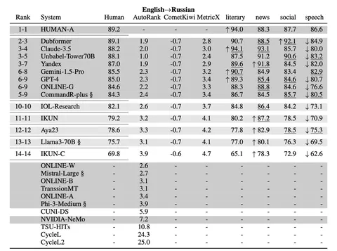

В последний год у Яндекса появилась хорошая LLM для перевода. А насколько хорошая мы решили проверить на соревнованиях, которые прошли в рамках девятой Конференции по машинному переводу (WMT). По итогам модель Яндекса заняла пятое место из 14.
Речь идёт о модели, которая сейчас доступна всем в видеопереводе. Почему именно она? Всё дело в условиях соревнований. Для перевода там давали документы с HTML-структурой, поэтому и модели-участники должны были поддерживать её. У части документов была озвучка, которой позволяли воспользоваться — то есть сперва распознать речь, а уже затем перевести её.
Организаторы стремились к тому, чтобы на конкурсные тексты невозможно было заранее обучить модель. Это значит, что использовали весьма редкие документы.
Специальную модель для WMT в Яндексе не делали, а заработанное пятое место связывают сразу с несколькими факторами. Во-первых, это переход от перевода отдельных предложений к переводу целых параграфов, что позволило учитывать контекст, а значит — улучшить итоговый результат.
Важно и то, что модель Яндекса училась на перефразах. Специалисты брали уже переведённое автоматикой предложение и просили изменить его так, чтобы перевод был больше похож на человеческий. На этих перефразах, в частности, и обучали модель. Кроме того, модель Яндекса умеет сохранять структуру оригинальных размеченных документов.
Вероятно, что модель Яндекса — самая маленькая из тех, кому удалось попасть в топ-5. Остальные конкурсанты представляют собой большие мультилингвальные LLM. Наша же ориентирована на пару языков русский и английский.
Победителя определяли с помощью оценки человеком. Однако для отбора конкурсантов использовали LLM-as-a-Judge-метрику — MetricX от Google.
ML Underhood
